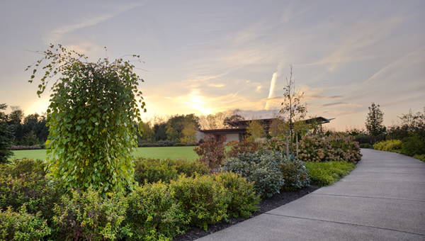

Welcome to the Arboretum!
From the official website of the Arboretum, "The mission of the Arboretum is to engage the academic strengths of the University in promoting scholarship and education about plants and their history and importance on earth."
The 370 acres of the Arboretum contain the H.O. Smith Botanic Gardens and the newly installed Childhood Gate's Children's Garden. Finished in 2014, the Children's Garden includes a limestone cave, a small outdoor library, and nature themed objects for children to play on.
